浅谈数字人仿真的渲染技术（二）
前言
新年好。这是接着上次关于数字人渲染技术的第二部分，今天的这部分的分享，我会开始介绍一些关于数字人渲染的实际技术。
数字人渲染技术介绍
接下来我们来聊一下数字人渲染技术方面的课题，我本身其实在这方面也不是什么大牛，在这里只是把一些我所学到的东西分享给大家。本次也不涉及到过深的技术讨论，如果想要对某个算法的细节想做更深的探讨，我们可以做后续的讨论。
在这里我提前预告一下，接下来的分享会包括哪些方面。
首先是会介绍一些数字人常用的渲染技术，比如皮肤，头发的渲染技术。在介绍这些渲染技术的时候，我主要会解释一下这个算法的构成，他是基于哪些理论而得出的算法，他的流程大致是怎样的，以及效果的一些展示。
本次分享不会包括的方面有：
-
数学公式推导，当今很多渲染的算法都会遵循实际的物理意义，大多包含较为复杂的数学公式的推导，以辅助实现最后的算法。我们今天的分享是浅谈，所以不会讲的那么深，要是专注于数学公式推导的话会花上非常多的时间，门槛也会提升很多，这块并不是今天的目的。
-
另外一个是不会Review相关的Shader代码或者材质蓝图连线，今天主要是希望大家理解好概念就好，代码这些在理解了概念后自己动手去写可以进一步帮助理解。
基于物理的渲染方式（Physically Based Rendering - PBR）
首先我们来看一下基于物理的渲染方式，也就是我们所说的PBR，这种方式一般是用于渲染写实、高保真类型风格的数字人。
这里我大概介绍一下PBR的概念。PBR的是基于物理的渲染，他的定义是利用真实世界的原理和理论，通过各种数学方法推导或者简化或者模拟出一系列的渲染方程，来输出拟真的画面。
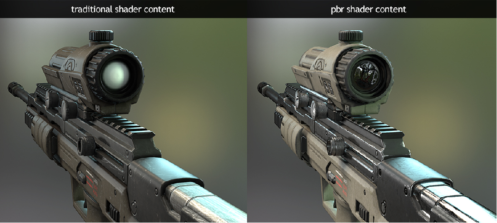
上面两张图是PBR和传统的shader的比较。在PBR出现之前，若想渲染出一张高质量的图，需要机械化的死记各种参数，然后基于烘焙贴图来实现的，并且通常环境光、物体位置必须保持不变。这些缺点在高质量的实时渲染里面显然是不能接受的。
而使用PBR这种渲染方式的话，我们需要分析物体自身物理属性然后给材质设定正确的光照参数，无论物体位置、光照如何改变，都有很好的效果。
但是PBR并不是纯粹的物理渲染，目前PBR还没办法用和现实一模一样的物理规律来实现渲染效果，这其中有硬件条件的限制（GPU，人眼5亿到10亿个像素的信息量），也有知识水平的限制，光照建模没办法达到和现实一模一样，所以在效果和性能上会需要做取舍。
BRDF
这里稍微做个补充，这段在原先的PPT中是没有包括的。
PBR的一个很经典的方法就是BRDF模型。
BRDF的是双向反射分布函数（Bidirectional Reflectance Distribution Function）的英文缩写。它从本质上描述了光线如何在物体表面反射，是一个用于量化给定入射方向的光在某个出射方向上的反射比例的函数。
具体来说，它定义为出射方向的反射辐射率r0（radiance）与入射方向的辐照度r1（irradiance）的比值，基于入射光方向，和观察（出射）方向。
例如，假设有一束光从某个方向照射到一个物体表面（这是入射方向），我们从另一个方向观察这个物体表面反射出来的光（这是出射方向），BRDF 就可以告诉我们从这个观察方向看到的反射光的强度和特性与入射光的关系。
有很多具体实现BRDF的方法，如Cook-Torrance模型、Disney模型等等。BRDF很适用于渲染非透明的物体，如墙壁、木头等等，对于人的皮肤，玉石等带有透明的材质则不太合适。这些材质需要用到次表面散射（BSSRDF）模型。
PBR-皮肤
好了，简单理解一下PBR的一些概念后，我们现在来介绍一下写实风格的数字人的皮肤渲染。
皮肤的渲染一直是渲染领域的难点之一：皮肤具有许多微妙的视觉特征，而观察者对皮肤的外观，特别是脸部的外观会非常敏感（恐怖谷）。皮肤的真实感渲染模型须包括皱纹，毛孔，雀斑等细节，而真实还原人体皮肤上的这些细节则是一个较大的挑战。
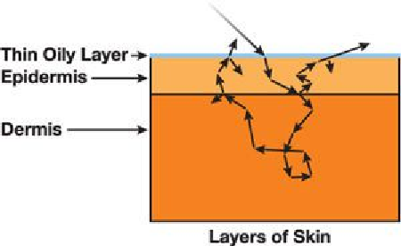
皮肤作为一种属性复杂的材质，不同于简单的材质表面比如说水泥墙这些，其物理结构由多层结构组成，其表面油脂层主要贡献了皮肤光照的反射部分，而油脂层下面的表皮层和真皮层则贡献了的次表面散射部分，而且还有一部分光会透射过皮肤的边缘或者很薄的地方。
这三个方面组成了皮肤渲染的主要因素，我们今天也着重介绍这三部分的一些计算方法。
镜面反射
在皮肤渲染中，高光这部分主要是皮肤的油脂层贡献的。高光的算法可以使用基本的**cook Torrance brdf模型**的高光计算部分，因为时间比较紧张，我们就不花时间介绍了。这是最经典PBR算法之一了，如果大家网上搜BRDF就很容易能能够找到。大致思路是高光表现会依据平面的粗糙度，观测角度等不同而不同。如下方图所示。
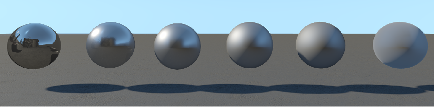
但是直接用BRDF计算皮肤高光一般并不能获得最好的效果，因为皮肤是一个复合的表面，他的突出部分和凹陷部分的粗糙度是不一样的。导致有两个粗糙参数，也就有两个高光需要表示。
所以虚幻引擎等某些渲染器会使用一个叫做双镜叶高光的技术。镜叶 lobe，也是如下图所示，其实就是光在某一个粗糙度平面下的一个分布状态。
![镜叶]](specular-lobe.png)
下面这张图是UE里面默认的高光混合的参数，通过混合两个粗糙度的高光表现，可以达到更贴近人脸皮肤的效果:
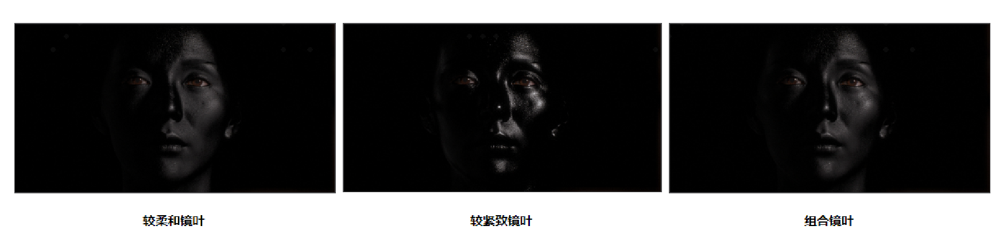
次表面散射(BSSRDF)
计算完高光后，我们之前提到，光线接触到皮肤时，有大约94%被皮肤各层散射，只有大约6%被反射。
我们可以看下对比图，前面我们提到的BRDF，其实主要就是假设光线的反射基于图a的现象，入射点和出射点是同一个，光在这个地方发生漫反射:
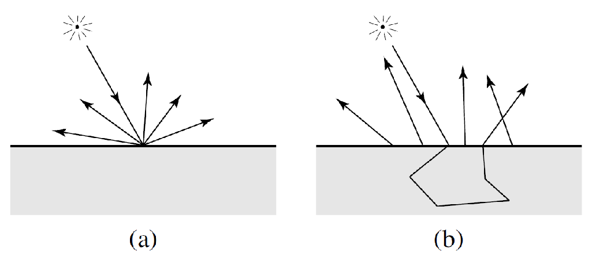
但其实光线在进入皮肤后的真实情况是更接近图b的，光线会进入我们的皮肤，通过油脂层到下面的表皮层和真皮层，会进行一阵游走，然后最终有一部分光线会被反射出来。
实际上几乎所有材质都存在次表面散射现象，区别只在于材质散射密度分布的集中程度，如果绝大部分能量都集中在入射点附近，就表示附近像素对当前像素的光照贡献不明显，可以忽略，则在渲染时我们就用漫反射代替，如果该函数分布比较均匀，附近像素对当前像素的光照贡献明显，则需要单独计算次表面散射。
为了模拟这种光线表现，提出了BSSRDF。
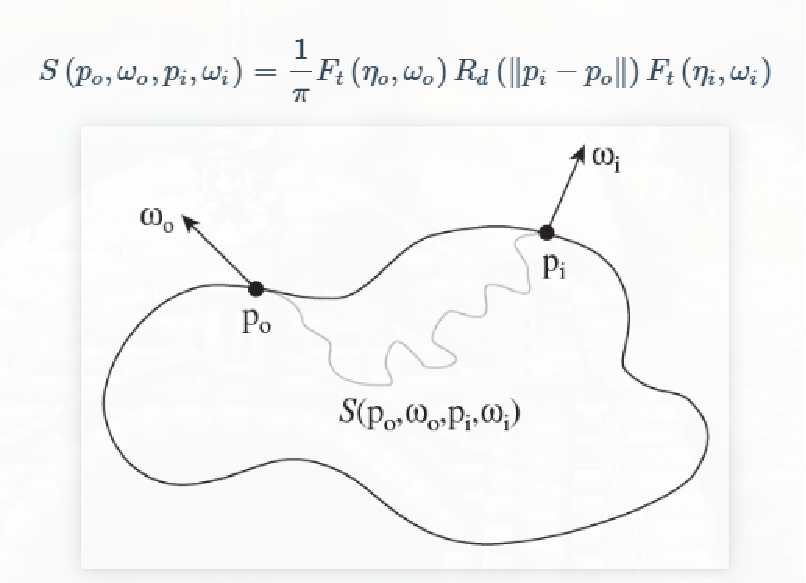
BSSRDF描述的是，对于当前出射点和出射方向，某个入射点和入射方向的光线能量对其结果的贡献。
我们观察点是固定的po，已知需要的出射方向，根据这些条件获取周围点对他的光照贡献（w：omega）。
如果我们想要按照真实世界，实时的模拟出每一束光在皮肤材质中的路线，从而获取到每一束光的正确出射点和角度的话，是难道很大的。BSSRDF的意义在于快速的近似真实世界的效果，为了平衡性能和效果，我们假设了4个前提：
- 物体是一个曲率为0的平面。
- 平面的厚度和大小都是无限。
- 内部的介质参数是均匀的。
- 光线永远是从垂直方向入射表面。
基于这些前提，我们就可以单纯以像素的距离作为权重，距离当前像素近的入射光照，贡献就大，反之距离远的，贡献小。对应的也就是公式上的R(||pi-po||)这部分。
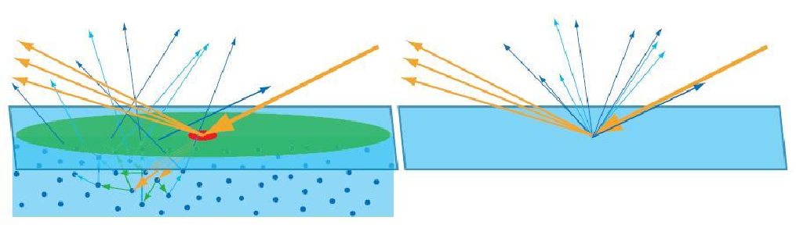
当然真正人体表面的皮肤是不满足与上面四点的，但是考虑到实时渲染的性能，单纯按照两个点的距离的近似可以达到能接受的效果。
用来描述光在物体内部的散射或者扩散的行为，就是公式中R那个部分，这个分布函数我们叫做散射剖面（diffusion profile），也有叫扩散剖面的。
计算散射剖面的算法有很多种，常见的有偶极子，多极子，高斯和拟合等等。这里内容比较深，由于时间的关系我们暂时不做详细介绍了。
同时，由于是单纯的根据距离来获得光照的权重，我们可以预处理散射剖面，做成一张lookup table，在实时渲染的时候直接查找对应的值，以加速渲染。
可以看一下这张图，reflectance（反射率）根据距离的变化，而且rgb三原色是分开计算的.
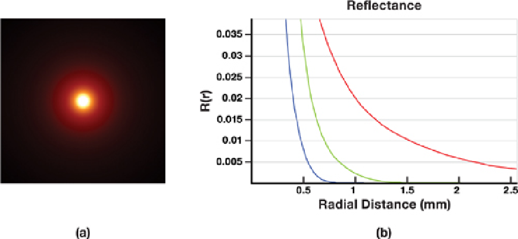
基于模糊的算法
计算次表面散射的光照的时候，当前像素的光照会受到周边像素的影响，而这个影响的程度我们是以距离来决定的。那其实换个角度想想，这是不是就是我们把原来当前像素的漫反射，抹匀到了周边，因为光的能量经过次表面散射分散到了周边的像素。这其实就是一个模糊操作，从数学角度上，都是做卷积处理。所以就有了基于模糊的皮肤渲染算法。
那么根据施加模糊的空间，分为了纹理空间模糊和屏幕空间模糊：
纹理空间模糊
纹理空间模糊他的一般步骤大概是：
- 首先需要获得一张拉伸校正贴图，一般是会预计算这张帖图，主要是为了表示每个Texel（纹素）需要进行多大范围的模糊。
- 然后渲染出模型的光照，漫反射，然后将模型的光照展开到纹理空间。
- 将这张图根据拉伸校正贴图所标定的范围，进行模糊处理，保存成一张或者多张纹理贴图。
- 最终渲染的时候，我们会获取依据这些贴图，然后按照某些特定的权重将它们混合，得到最后的漫反射结果
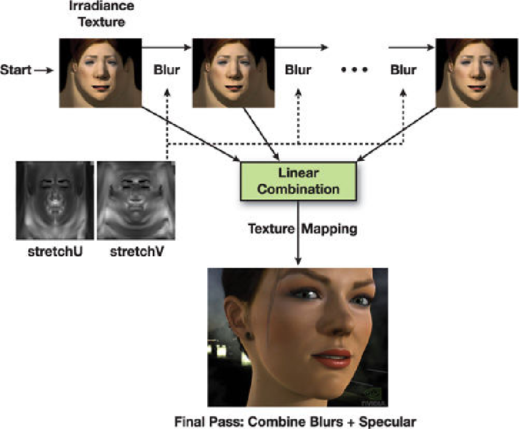
在纹理空间模糊的好处很明显：比较正确，不会穿帮，可以进行低精度的绘制再利用硬件插值来辅助Blur，模糊的方法也很多。
但缺点也很明显：主要是背面也同样要绘制，而且美术需要处理好纹理不然会有接缝问题。
屏幕空间模糊
那么屏幕空间模糊就比较好理解了，就是在屏幕空间对皮肤的光照结果进行模糊。
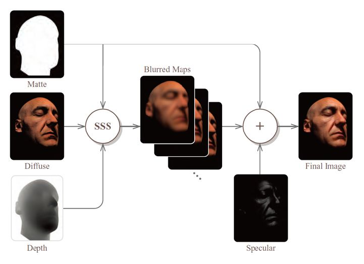
需要注意一下边界问题，不能模糊出界了，处理的时候可以根据深度等作为模板处理。
下面的图是皮肤在纹理空间和屏幕空间的模糊的效果的不同。
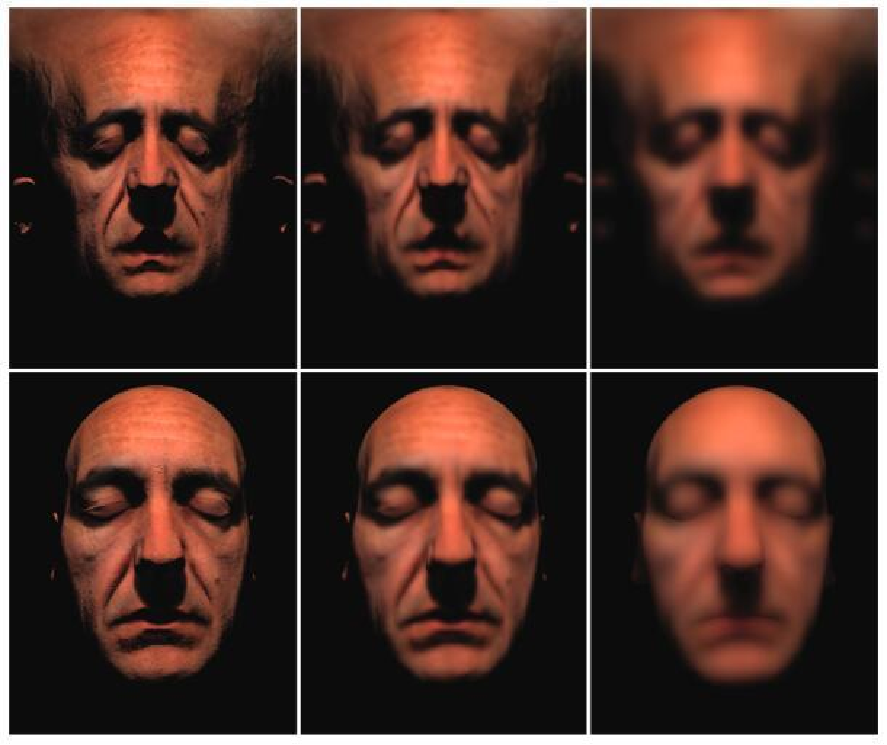
透射
最后我们简单讲一下透射，透射和次表面散射的区别是透射的光一般是从另外一面照射过来的，而次表面散射我们一般是按照光源和我们的观察点在模型的同一侧。像是我们手指边缘，或者耳垂部分，是比较容易出现这种现象的。
我们一般计算透射的方式的步骤包括三步：
- 计算光照在进入半透明介质时的强度
- 计算光线在介质中经过的路径
- 根据路径长度和BTDF来计算出射光线的强度
那这里我们又要提出一个BXXXDF了，也就是BTDF，其中的T就代表透射。他和BRDF较为类似，只不过光源是从另外一面穿出来的。
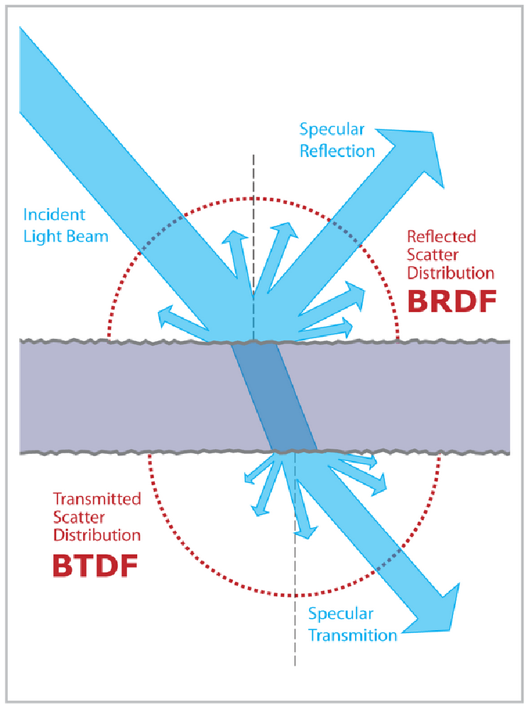
当然由于光在另外一面穿到前面来，光的强度会有损失，光也会在皮肤出现次表面散射，不过BTDF作为一种近似算法在实时渲染中一般只简化为一个和光线路径长度的函数。
不过一般来说皮肤渲染上透射出现的区域也是比较小的。
UE里面的皮肤着色模型
皮肤的渲染算法我们目前就介绍到这里了，当然作为浅谈我们只是稍微触及了一些皮毛，想要做出更好更加真实的皮肤效果还有很多地方可以深入。
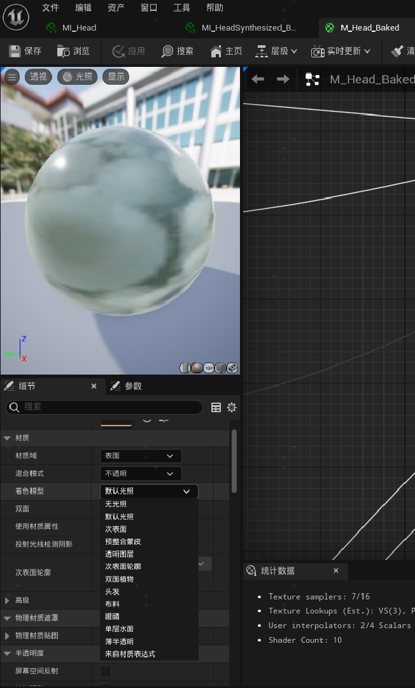
这里我大概介绍一下UE，可能很多同学自己做项目也是用的UE。UE的皮肤材质有很多种着色类型，在材质的着色类型可以选择，一般来说皮肤的材质会默认是次表面轮廓类型，这是效果最好的着色模型，像是metahuman的皮肤材质着色也是这种类型。
次表面就是我们前面讲的基于次表面散射的着色模型，因为次表面散射也可以用作冰川等材质，所以如果选择次表面着色模型且针对皮肤想要有更好的效果的话，需要自己进行调整。
最后预整合皮肤也是我们之前提到的优化方法之一，他精度比次表面略低但是性能开销也低。
结语
写实风格的皮肤渲染技术就分享到这了，不知不觉文章的长度已经超长了，剩下的部分只能放到后续的文章了。下次的分享的主要内容将会是头发的渲染。